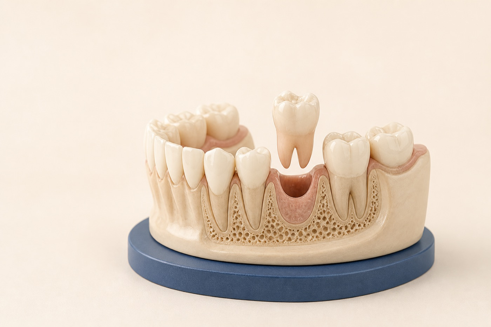

Evaluate
Examine the tooth, review imaging, and determine whether it can be saved.
Tooth extraction in Renton, WA
Removing a tooth is sometimes the healthiest way to relieve pain, control infection, or make room for better function. We first evaluate whether the tooth can be predictably preserved, then plan a comfortable extraction and the next step for your smile.

Your treatment path
We plan the extraction around your comfort, the condition of the tooth, and what should happen after it is removed.
Examine the tooth, review imaging, and determine whether it can be saved.
Review comfort options, risks, aftercare, and any future tooth replacement.
Numb the area thoroughly and remove the tooth with a tissue-conscious approach.
Protect the site, follow written aftercare, and return for follow-up when indicated.
Call promptly for heavy bleeding that does not slow, increasing swelling, fever, difficulty breathing or swallowing, or pain that becomes significantly worse after initial improvement.
Why an extraction may be recommended
An extraction is recommended only after considering whether predictable treatment can preserve the tooth and support your long-term health.
Deep decay or a fracture extending below the gumline may leave too little healthy tooth structure to restore.
Persistent infection or advanced periodontal support loss can make removal the safest option.
An extraction may occasionally be part of orthodontic, restorative, or full-mouth treatment planning.
What we evaluate
Before treatment, we review the tooth, roots, surrounding bone, nearby anatomy, medical history, and your goals. When replacement is appropriate, early planning can help preserve better options.
Tooth extraction FAQ
The area is thoroughly numbed before treatment. You may feel pressure during the procedure and temporary soreness afterward, which can usually be managed with the aftercare plan provided.
Early healing commonly takes one to two weeks, while the bone continues to change for longer. Timing varies with the tooth, procedure, health, and aftercare.
Start with cool or lukewarm soft foods and avoid chewing on the extraction site. Follow your individualized instructions, including guidance about straws, smoking, and returning to a normal diet.
Many teeth should be replaced to restore function and help maintain tooth position, while some teeth do not need replacement. We discuss implants, bridges, and other options before treatment whenever possible.
A focused evaluation can clarify whether the tooth can be saved and what treatment path makes sense.